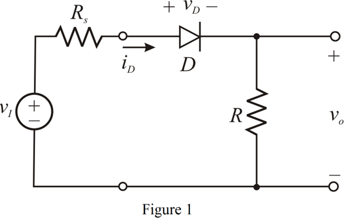
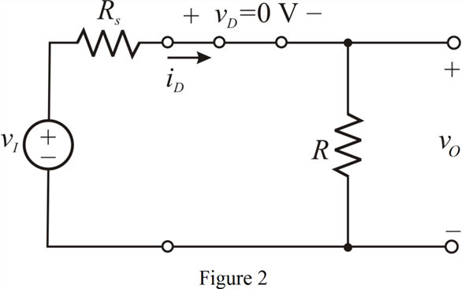
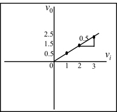

Draw the rectifier circuit with a source resistance, .

During positive half cycle of the input, the diode is forward biased. Replace the diode with a short circuit, assuming it to be ideal. Draw the diode circuit.

Apply voltage division rule to find the output voltage, .
For the output voltage is,
Thus, during positive half cycle of the input voltage, the output voltage is . It is represented by a straight line with a slope of 0.5 in the transfer characteristics.
During negative half cycle the diode is reverse biased and can be replaced with an open circuit, assuming it to be ideal. As the diode is open, no current flows through the output resistance. Hence, the output voltage is zero.
Draw the transfer characteristic, versus .

Thus, the transfer characteristic of the rectifier circuit is drawn.